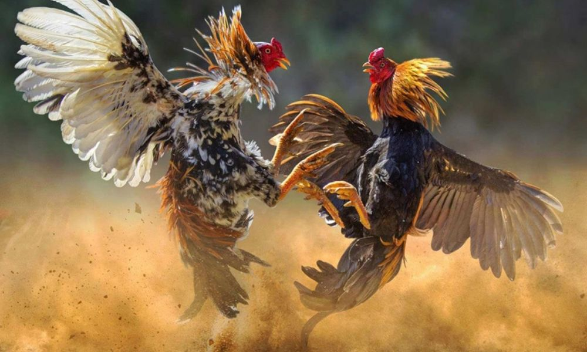
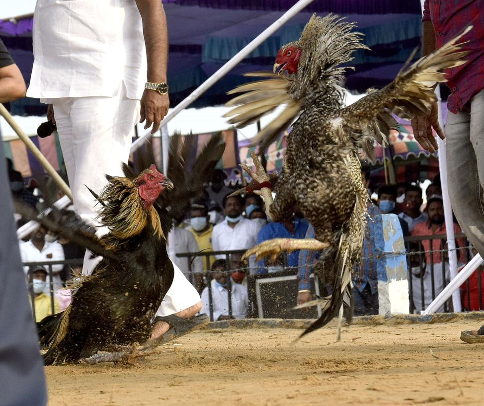
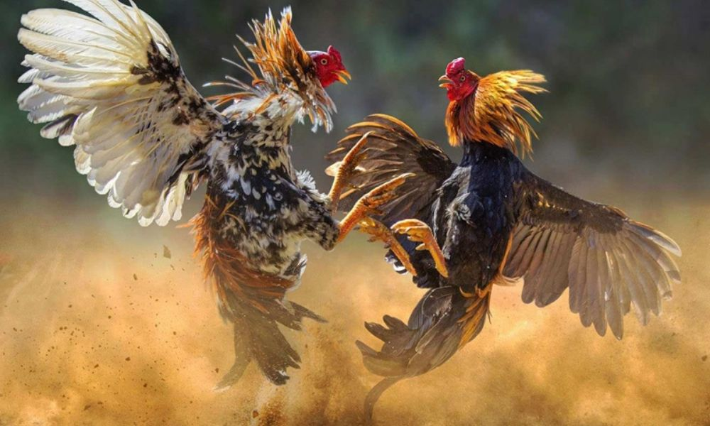
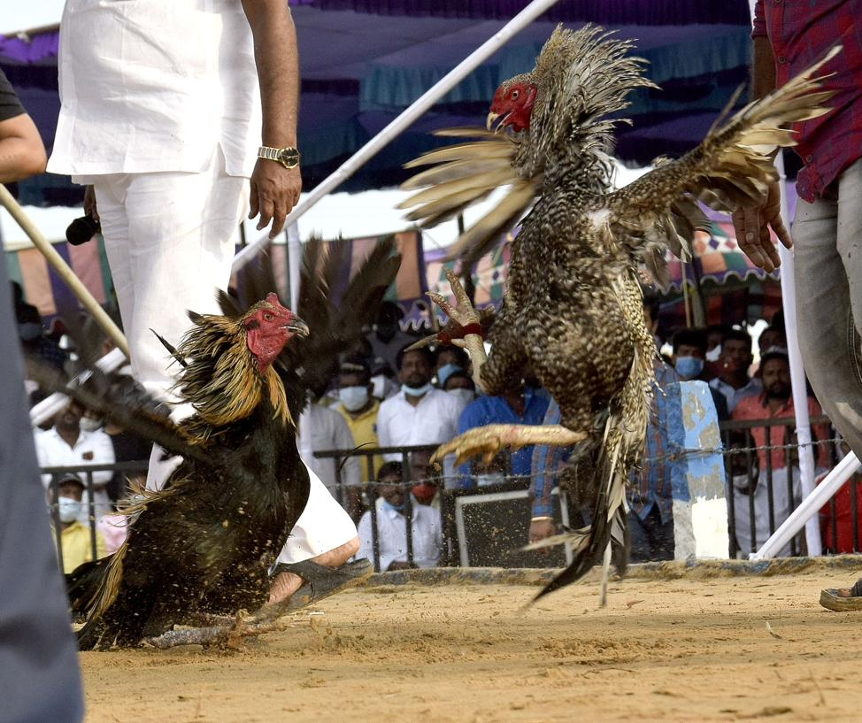
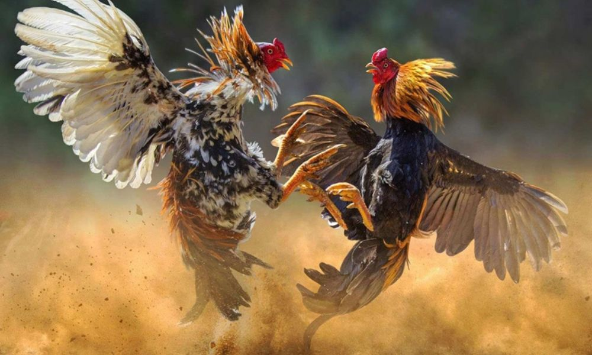
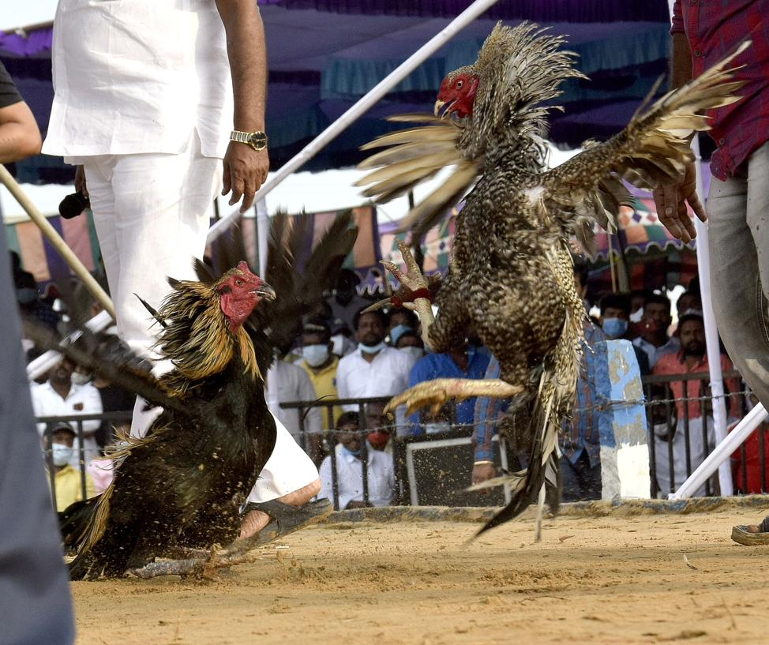

Gallery

 



The Traditional Cockfight of Tulunadu
Korikatta is a traditional cockfight practiced in the villages of Tulunadu. It symbolizes courage, pride, competitive spirit and community bonding.
The tradition is deeply rooted in festival celebrations, where specially trained roosters compete in a vibrant rural arena filled with cheers and energy.
Korikatta is more than a sport — it is a ritual celebration of strength, discipline and community identity.
Roosters are trained, fed, and prepared with utmost care and respect.
A circular mud arena is set. Owners follow local customs and unwritten rules.
The roosters compete as villagers gather, creating an intense festive atmosphere.
Due to legal restrictions in many regions, Korikatta is not publicly practiced like before. However, it continues to live on in Tulunadu's cultural memory.
Festivals, folklore songs, and rural traditions still preserve its legacy.

